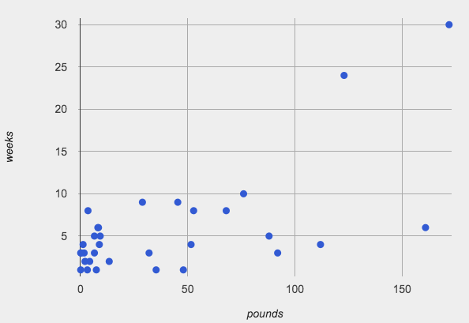
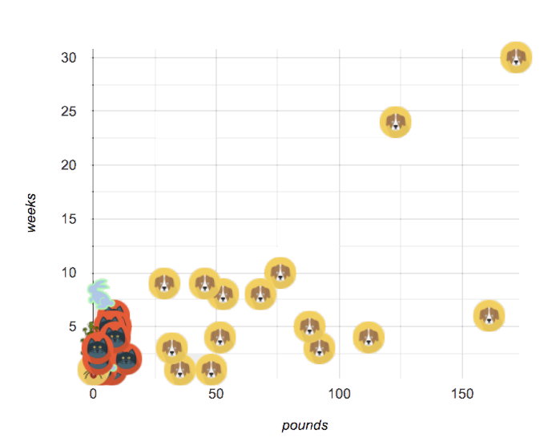

Grouped Samples
(Also available in Pyret)
Students practice creating grouped samples (non-random subsets) and think about why it might sometimes be useful to answer questions about a dataset through the lens of one group or another.
|
Lesson Goals |
Students will be able to…
|
|
Student-facing Lesson Goals |
|
|
Materials |
|
|
Preparation |
|
grouped sample-
a non-random subset of individuals chosen from a larger set, where the individuals belong to a specific group
| Problems with a Single Population | 10 minutes |
Overview
This activity is all about grouped samples: Students make a bunch of non-random samples from the Animals Dataset, and see how each samples might answer the same question differently.
Launch
When looking at a scatter plot of animals, it looks like the amount an animal weighs may have something to do with how long it takes to be adopted.

{kind=link}
But if we label the dots by animal, we notice every data point after 25 pounds belongs to a dog from the shelter! The cats are all clumped together in the lower weight range, making it hard to see how weeks to adoption may relate to a cat’s weight.

{kind=link}
Investigate
Divide the class into groups of 3-4, with one student identified as the "reporter".
-
Looking at this scatter plot (above), does it make sense to analyze all the animals together? Why or why not?
-
No. Every data point after 25 pounds belongs to a dog from the shelter. The cats are clumped in the lower weight range.
-
-
Are there some questions where it would be important to break up the population into species-specific populations? What are they?
-
Sample response: Yes. If we want to know whether dogs or cats are more likely to be fixed, we would need to look at each species separately.
-
-
Are there some questions where it would be important to keep the whole population together? What are they?
-
Sample response: Yes. If we want to know if, in general, young animals are adopted more quickly, we would look at the entire population.
-
Have the reporters share their findings with the class.
Synthesize
You’ve been handed a dataset from a country where half the people have access to amazing medical care, and the other half have no healthcare.
-
Why might it be important to look at a particular sample of a population?
-
Sample response: Maybe we want to determine if emissions from a nearby factory impact the health of residents of one particular neighborhood.
-
-
Why is it sometimes bad to blindly take random samples?
-
If we took a random sample of the population as a whole, we might think that they are generally middle-income and have average health. But if we ask the same question about the two groups _separately, we would discover inequality hiding in plain sight!_
-
| Grouped Samples | 20 minutes |
Launch
Depending on the question we’re asking, sometimes it makes more sense to ask about "just the cats" or "just the dogs". Averaging every animal together will give us an answer, but it may not be a useful answer.
Sometimes important facts about samples get lost if we mix them with the rest of the population!
Data Scientists define grouped samples of datasets, breaking them up into sub-groups that may be helpful in their analysis.
Investigate
A “kitten” is an animal who is a cat and who is young. How would you define a table of just kittens?
-
Turn to Grouped Samples from the Animals Dataset, and see what sequence of Transformers will compute whether or not an animal is a kitten.
-
Can you fill in the function notation for the other grouped samples?
-
Make a bar chart showing the distribution of
sexin thekittenssample . -
Make bar charts showing the
sexcolumn for every grouped sample. Which one best represents the distribution of species for the whole population? Why?
Synthesize
-
How could we filter and sort a table?
-
How can we combine methods?
| Displaying Samples | 20 minutes |
Overview
Students revisit the data display activity, now using the samples they created.
Launch
Making grouped and random samples is a powerful skill, which allows us to dig deeper than just making charts or asking questions about a whole dataset. Now that we know how to make grouped samples, we can make much more sophisticated displays!
Let’s start with question: what’s the ratio of fixed to unfixed cats at the shelter? Let’s use the Data Cycle to get an answer, using our knowledge of grouped samples.
 🖼Show image This is an Arithmetic Question. We know it’s not a lookup question because there’s no ratio written somewhere in the table for us to read. Instead, we’ll have to count all the fixed cats and the unfixed cats, then compare the totals.
🖼Show image This is an Arithmetic Question. We know it’s not a lookup question because there’s no ratio written somewhere in the table for us to read. Instead, we’ll have to count all the fixed cats and the unfixed cats, then compare the totals.
{kind=link}
🖼Show image We know that we’ll need to count only the cats!, and can ignore everything else. And once we’ve picked the rows for cats, the only column we want is the fixed column. This is a huge hint that we’ll need to filter the dataset!
{kind=link}
🖼Show image Given our options, a bar chart seems most appropriate for this scenario. We’ve decided what to make and we know which rows and columns we’re plotting, so the next step is to determine the configuration!
{kind=link}
🖼Show image What did our displays tell us? In this case, we got a clear answer to our question. But perhaps that’s not the end of the story! We might have new questions about whether a higher percentage of dogs are spayed and neutered than cats, or whether it’s even possible to "fix" a tarantula. All of this belongs in our data story!
{kind=link}
Investigate
-
Complete Displaying Data, using what you’ve learned about samples to make more sophisticated data displays.
-
Complete Data Cycle: Analyzing Categorical Data.
Synthesize
-
What connections do you see between the "Consider Data" and "Analyze Data" steps?
-
How do we know when we need to filter? How do we know when we don’t?
These materials were developed partly through support of the National Science Foundation,
(awards 1042210, 1535276, 1648684, and 1738598).  Bootstrap by the Bootstrap Community is licensed under a Creative Commons 4.0 Unported License. This license does not grant permission to run training or professional development. Offering training or professional development with materials substantially derived from Bootstrap must be approved in writing by a Bootstrap Director. Permissions beyond the scope of this license, such as to run training, may be available by contacting contact@BootstrapWorld.org.
Bootstrap by the Bootstrap Community is licensed under a Creative Commons 4.0 Unported License. This license does not grant permission to run training or professional development. Offering training or professional development with materials substantially derived from Bootstrap must be approved in writing by a Bootstrap Director. Permissions beyond the scope of this license, such as to run training, may be available by contacting contact@BootstrapWorld.org.